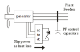
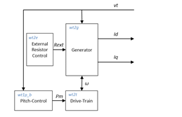

Date of Publication:
May 31, 2016Version Information:
1.00Model Accessibility:
Proprietary Documentation:
Publicly accessible info enough for model modifications – generic, non-proprietary.Model Symbol:
Accreditation:
TRL 9Type/Category of Model:
Brief Theoretical Background:
A Type 2 Wind Turbine Generator (WTG) is a directly-coupled induction generator that utilizes switched capacitors for power factor correction. These machines can rapidly adjust the effective rotor resistance with power electronics. The rotor resistance control and the pitch control work in concert to control speed, reduce mechanical stress, and improve stability during a system disturbance.
The Type 2 WTG model includes 4 main models as follows:
List of References:
Model Specifications:
Assumptions:
Limitations:
Model Dependencies:
This model is not a stand-alone model and depends on a complete power system model such as those developed for the large interconnection systems in North America. For example, shunt capacitors and any other reactive support equipment required for the wind power plant must be modeled separately with existing standard models.Interfacing Information:
A list of available simulation modules for Siemens PTI PSS®E, GE PSLF™, and PowerWorld Simulator is shown in the table.| Software Platform | PSLF™ | PSS®E | PowerWorld |
|---|---|---|---|
| Generator | wt2g | WT2G1 | wt2g, WT2G1 |
| Excitation | wt2e | WT2E1 | wt2e, WT2E1 |
| Turbine | wt2t | WT12T1 | wt2t, WT12T1 |
| Pitch Controller | wt2p | WT12A1 | wt2p, WT12A1 |
Diagrammatic Representation:

Interfacing Capabilities for HIL Simulations:
No.Model Validation:
Through numerous validation cases it has been shown that this model adequately captures the dynamic time-domain behavior of the WTG.Metrics for validation:
A complete description of the guidelines for model validation can be found in the WECC “Generating Unit Model Validation Policy” available on the WECC website.The measure of success of the validation a demonstration of reasonable agreement between the recorded and simulated results. Important characteristics used to determine reasonable agreement include the following:
Source: “WECC Generating Facility Data, Testing and Model Validation Requirements”, (https://www.wecc.biz/Reliability/WECC%20Gen%20Fa c%20Testing%20and%20Model%20Validation%20Rqmts %20v%207-13-2012.pdf).